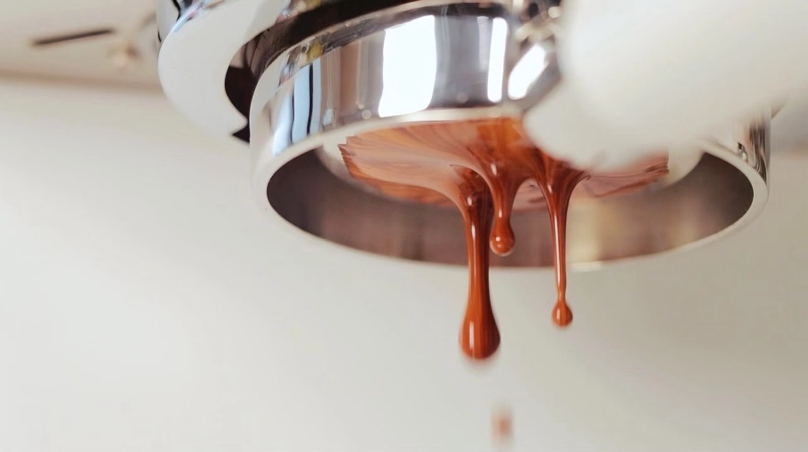

意式浓缩咖啡制作精要：六大关键因素深度解析
制作一杯完美的意式浓缩咖啡（Espresso）是一门科学，也是一门艺术。它需要精准的控制和对细节的关注。本篇将详细解析影响意式浓缩咖啡制作的六大关键因素，助你轻松掌握制作精髓。
意式咖啡制作的六大关键因素
要轻松掌握意式浓缩咖啡的制作，首先要了解以下六大关键因素：
- 压力
- 温度
- 咖啡粉量
- 压粉力度
- 研磨度（萃取时间）
- 粉液比（咖啡液量）
萃取压力
标准值：9bar
萃取压力是意式浓缩咖啡制作中的核心参数。在9 bar的标准压力下，热水被强制通过精细研磨的咖啡粉，在短时间内高效提取咖啡中的芳香化合物和风味物质。这一高压快速萃取过程不仅定义了意式浓缩咖啡的独特口感，还促成了咖啡表面那层标志性的金黄色咖啡油脂（crema）的形成。
冲泡温度
标准值：93℃（200℉）
冲泡温度是影响咖啡萃取效率的重要因素。高温（93°C）能够加速咖啡粉中可溶性物质的溶解，从而充分提取咖啡的香气和风味。若需调整温度，可遵循以下原则：提高温度会增强萃取效率，使咖啡风味更浓郁；降低温度则会使萃取更为柔和，适合偏好清淡口感的用户。
咖啡粉量
标准值：17-18克（适用于17克粉碗）
咖啡粉的用量直接关系到萃取咖啡液的浓度和风味。18克粉碗是行业中最常用的规格，建议使用17-18克咖啡粉进行萃取。粉量的选择应根据目标咖啡液量进行调整，以确保萃取的咖啡液既不过度稀释也不过于浓缩。
压粉
标准：平整、均匀、紧实的咖啡粉饼
压粉是意式浓缩咖啡制作中的重要步骤，其目的是通过均匀的压力使咖啡粉表面平整且紧实，从而确保热水在萃取过程中均匀通过咖啡粉层。虽然压粉的力度和一致性对咖啡风味的影响相对较小，但一个平整、均匀且紧实的粉饼能够提高萃取的稳定性，减少通道效应（channeling）的发生。建议每次压粉时保持力度一致，但无需过度追求极致的压力，因为压粉对最终风味的影响更多体现在萃取均匀性而非风味强度上。
研磨度与萃取时间
标准：细研磨，20-30秒
研磨度决定了水流通过咖啡粉饼的速度。研磨越细，阻力越大，水流越慢，萃取时间越长，咖啡风味越充分。调试研磨度时，如果萃取时间少于20秒，可能是研磨过粗，咖啡会偏酸或寡淡；如果超过30秒，可能是研磨过细，咖啡会偏苦或过于浓烈。
- 萃取不足：如果水流过快（少于20秒），可能是研磨过粗，咖啡会尝起来有草味、酸味或口感寡淡。解决方法是调细研磨度。
- 过度萃取：如果水流过慢（超过30秒），咖啡可能会苦涩或过于浓烈。解决方法是调粗研磨度。
粉液比（萃取比例）
通过调整粉液比，可以控制流经咖啡粉饼的水量，从而影响咖啡的浓度，建议从以下比例开始尝试：
- 浅烘焙咖啡：建议粉液比1:2或1:2.5，口感更轻盈，风味更清晰。
- 深烘焙咖啡：建议粉液比1:1或1:1.5，口感更浓郁，风味更厚重。
掌握这些关键因素，并根据实际情况进行调整，你就能制作出稳定且风味出众的意式浓缩咖啡。